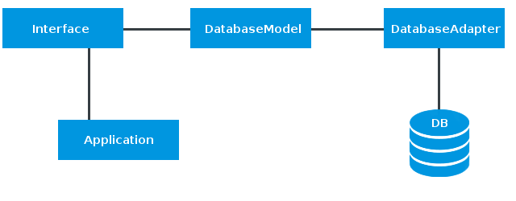
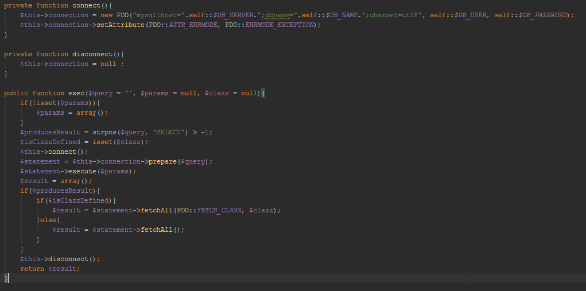
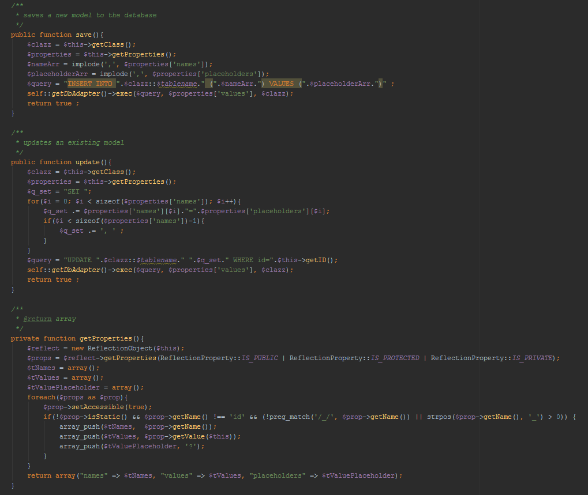
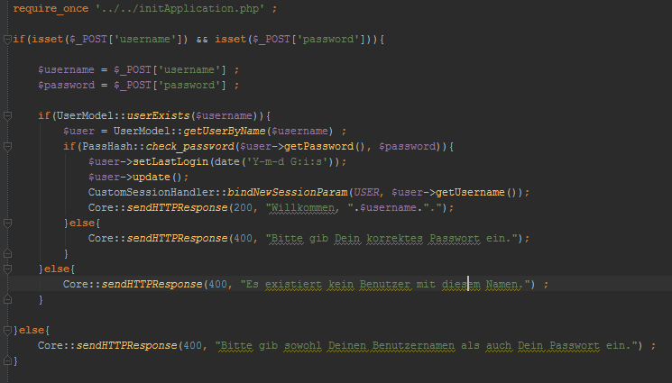
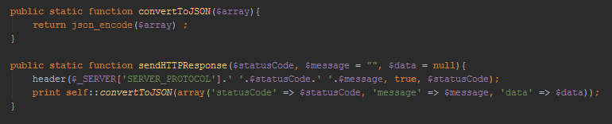

Das Gästebuch
Diese Seite dient als Dokumentation des hier vorliegenden Studienprojektes.Zunächst soll die Aufgabenstellung umrissen und das daraus resultierende Konzept vorgestellt werden. Anschließend werden die einzelnen Komponenten dieser Web-Applikation und deren technischen Details erläutert.
Die Aufgabenstellung
Im Rahmen des Praktikums der Veranstaltung Verteilte Systeme des Studienganges Medien- und Kommunikationsinformatik der Hochschule Reutlingen soll ein Gästebuch entwickelt werden, welches die Möglichkeit bietet, Beiträge zu lesen und zu verfassen.Um die verfassten Beiträge dauerhaft speichern zu können, soll eine MySQL-Datenbank verwendet, der Server in PHP implementiert und das Frontend unter Verwendung von HTML, JavaScript und CSS realisiert werden. Die Kommunikation zwischen Client und Server soll dabei basierend auf AJAX im JSON-Format erfolgen.
Das Konzept
Dieses Gästebuch stellt eine sogenannte Single-Page Applikation dar. Die gesamte Navigation sowie sämtliche Aktionen laufen dabei innerhalb der Seite ab, ohne dass ein erneutes Laden der Seite erforderlich ist. Gesamt setzt sich die Seite aus drei Hauptelementen zusammen: Für die Navigation zwischen den einzelnen Seiteninhalten existiert eine Navigationsleiste am linken Rand. Die verschiedenen Inhalte werden im Hauptbereich in der Mitte der Seite dargestellt. Für alle weiteren Optionen und Aktionen wie beispielsweise die Registrierung oder die Anmeldung gibt es die sogenannte Sidebar, die sich vom rechten Rand der Seite her öffnet. Der Fokus bei diesem Entwurf liegt dabei auf der Benutzerfreundlichkeit: Es sollen immer nur die Inhalte angezeigt werden, die für den Benutzer gerade im Moment von Interesse sind - alles andere wird konsequent ausgeblendet!Des Weiteren verfügt das Gästebuch über zwei unterschiedliche Bereiche. Im öffentlichen Bereich kann jeder Benutzer anonym unter Verwendung eines temporären Benutzernamens neue Beiträge verfassen. Beiträge in diesem Bereich können von jedem gelesen werden, der die Seite aufruft. Zum privaten Bereich haben dagegen lediglich registrierte Mitglieder Zugang. Beiträge in diesem Bereich können von nicht angemeldeten Benutzern nicht eingesehen werden. Für die Registrierung werden ein noch nicht verwendeter Benutzername sowie ein Passwort benötigt.
Die Datenbank
Die Datenbank besteht aus zwei Tabellen: Die Tabelle users beinhaltet alle Informationen über registrierte Mitglieder, wohingegen content der Speicherung aller verfassten Beiträge dient. Dabei werden sowohl Beiträge aus dem öffentlichen als auch solche aus dem privaten Bereich in dieser Tabelle abgelegt. Die Unterscheidung, welchem Bereich ein Beitrag angehört, geschieht über die
angehängten Benutzerinformationen. Da private Beiträge nur von registrierten Benutzern verfasst werden können, wird bei diesen
eine gültige User ID in der Datenbank hinterlegt. Bei öffentlichen Beiträgen kann keine User ID gesetzt werden, da diese
von anonymen Benutzern erstellt werden. Daher wird hier direkt der temporäre Benutzername des Erstellers gespeichert, die User ID wird
auf den Wert NULL gesetzt.
Die Unterscheidung, welchem Bereich ein Beitrag angehört, geschieht über die
angehängten Benutzerinformationen. Da private Beiträge nur von registrierten Benutzern verfasst werden können, wird bei diesen
eine gültige User ID in der Datenbank hinterlegt. Bei öffentlichen Beiträgen kann keine User ID gesetzt werden, da diese
von anonymen Benutzern erstellt werden. Daher wird hier direkt der temporäre Benutzername des Erstellers gespeichert, die User ID wird
auf den Wert NULL gesetzt.Der Server
Die Dokumentation des Servers gliedert sich in die beiden Abschnitte Datenbankanbindung und Schnittstellen (Interfaces). Die nachfolgende Abbildung illustriert die grundlegende Architektur des Servers. Datenbankanbindung
Der DatabaseAdapter dient der Anbindung an die Datenbank und basiert auf den PHP Data Objects (PDO). Anfragen an die Datenbank werden dabei über die Methode exec() in Form von Prepared Statements gesendet. Falls es sich um ein SELECT handelt, werden die resultierenden Zeilen aus der Datenbank in die entsprechende Klasse konvertiert, die als Parameter spezifiziert werden kann. Die nachfolgende Abbildung zeigt die Methoden zum Verbindungsaufbau und -abbau sowie die Methode für die Ausführung von Datenbankanfragen.  Das DatabaseModel bildet die Daten aus der Datenbank in objekt-orientierter Form ab und dient als Grundlage für die Implementierung aller weiteren Datenmodelle wie zum Beispiel das UserModel. Ein Model verfügt für die Kommunikation mit der Datenbank über eine statische Instanz des DatabaseAdapters. Außerdem existieren Methoden zum Speichern und Aktualisieren des Models in der Datenbank. Beide Prozesse funktionieren dabei auf Grundlage von Reflection. Hierdurch kann auch auf Attribute, die erst dynamisch zur Laufzeit gesetzt werden, zugegriffen und diese so in der Datenbank gespeichert werden. Die nachfolgende Abbildung gibt einen Überblick über die eben beschriebenen Methoden.  Alle weiteren Models erben vom DatabaseModel und nutzen die Methoden dieser Klasse. Darüber hinaus verfügt jedes Model über individuelle Getter und Setter für die einzelnen model-spezifischen Attribute.Schnittstellen
Die Schnittstellen (Interfaces) dienen als Kommunikationspunkt zwischen Server und Client. Entsprechend der HTTP-Methode, den übergebenen Parametern und deren Gültigkeit werden die Anfragen des Frontends hier verarbeitet und Antworten im JSON-Format zurückgeschickt. Die nachfolgende Abbildung illustriert diese Funktionsweise anhand der Anmelde-Schnittstelle.  Zunächst wird das initApplication-Skript eingebunden. Dieses wird in jeder Schnittstelle benötigt, um die Application und deren integrierten Autoloader nutzen zu können. Auf diese Weise muss ab diesem Zeitpunkt nicht mehr jedes verwendete Skript händisch eingebunden werden. Anschließend wird geprüft, ob es sich um die korrekte HTTP-Methode handelt und die erforderlichen Parameter alle gesetzt sind. Im Falle des Anmeldevorganges muss es sich um eine Anfrage via HTTP-Post handeln. Es werden der Benutzername und das Passwort benötigt. Sind diese korrekt eingegangen, wird überprüft, ob ein Benutzer mit dem angegebenen Benutzernamen existiert. Dies geschieht über den Aufruf der dafür zuständigen statischen Methode des UserModels. Existiert kein Benutzer mit diesem Namen, wird - wie in jedem anderen Fehlerfall - eine Antwort mit dem HTTP-Statuscode 400 (client-seitiger Fehler, zum Beispiel durch fehlerhafte Eingabe) und einer optionalen Fehlermeldung an den Client zurückgesendet. Ist der Benutzer dem System bekannt, wird das dazugehörige UserModel geladen und das eingegebene Passwort mit dem in der Datenbank hinterlegten verglichen. Selbstverständlich erfolgt dies in verschlüsselter Form. Zuständig für die Verschlüsselung und die Prüfung verschlüsselter Passwörter ist die statische Klasse PassHash. War die Passworteingabe ebenfalls korrekt, so hat sich der Benutzer erfolgreich angemeldet. Der Zeitpunkt der letzten Anmeldung wird in der Datenbank aktualisiert und die Session des Benutzers aktiviert. Im letzten Schritt wird eine Willkommensnachricht mit dem Statuscode 200 an den Client gesendet. Alle anderen Schnittstellen funktionieren auf dieselbe Weise.Nachfolgend wird noch kurz die Methode illustriert, die die HTTP-Antworten im JSON-Format an den Client sendet. Diese befindet sich im Modul Core. 
Der Client
Wie der Server gliedert sich auch der Client in mehrere Komponenten: So gibt es client-seitige Schnittstellen (Interfaces), die zur Kommunikation über HTTP-Methoden mit dem Server dienen, Skripte, die die Navigation auf der Seite sowie Animationen regeln und zuletzt HTML-Dateien, die über AJAX in die entsprechenden Bereiche der Seite eingebunden und unter Verwendung von CSS grafisch gestaltet werden.Die gesamte in JavaScript realisierte Funktionalität wird dabei durch den Einsatz von jQuery unterstützt.